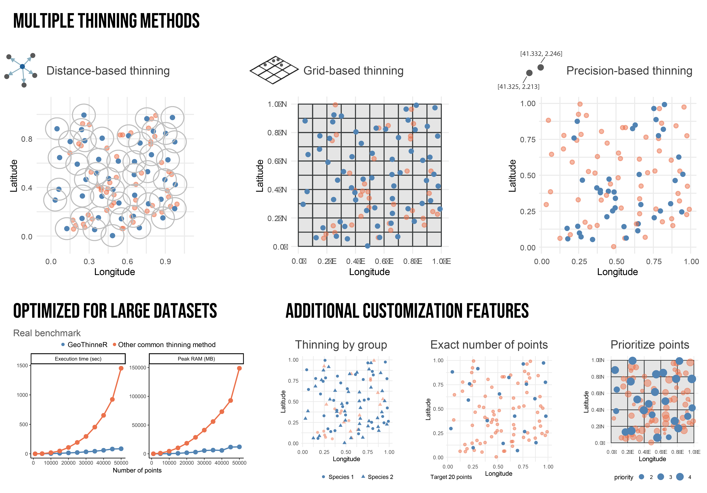

Overview
GeoThinneR is an R package designed for efficient spatial thinning of species occurrence records and other geospatial point data. It integrates three primary thinning methods (distance-based, grid-based, and precision-based thinning) into a single package, eliminating the need to switch between multiple tools. GeoThinneR implements algorithms based on kd-tree structures for nearest-neighbor searches, significantly improving performance and scalability for large datasets. Additionally, the package provides custom functionalities useful for species distribution modeling (SDM), such as thinning by group (e.g., multiple species), retaining an exact number of points, and prioritizing records based on user-defined variables. These features make GeoThinneR a valuable tool for handling large-scale occurrence datasets.

GeoThinneR has been developed as an alternative tool for spatial thinning to mitigate the effects of sampling bias in SDM. Various approaches exist to address sampling bias, each suited to different scenarios. Below are some references discussing methods for bias correction and spatial thinning:
- Boria, R. A., Olson, L. E., Goodman, S. M., & Anderson, R. P. (2014). Spatial filtering to reduce sampling bias can improve the performance of ecological niche models. Ecological modelling, 275, 73-77. https://doi.org/10.1016/j.ecolmodel.2013.12.012
- Veloz, S. D. (2009). Spatially autocorrelated sampling falsely inflates measures of accuracy for presence‐only niche models. Journal of biogeography, 36(12), 2290-2299.https://doi.org/10.1111/j.1365-2699.2009.02174.x
- Moudrý, V., Bazzichetto, M., Remelgado, R., Devillers, R., Lenoir, J., Mateo, R.G., Lembrechts, J.J., Sillero, N., Lecours, V., Cord, A.F., Barták, V., Balej, P., Rocchini, D., Torresani, M., Arenas-Castro, S., Man, M., Prajzlerová, D., Gdulová, K., Prošek, J., Marchetto, E., Zarzo-Arias, A., Gábor, L., Leroy, F., Martini, M., Malavasi, M., Cazzolla Gatti, R., Wild, J. and Šímová, P. (2024), Optimising occurrence data in species distribution models: sample size, positional uncertainty, and sampling bias matter. Ecography, 2024: e07294. https://doi.org/10.1111/ecog.07294
Getting started
You can install GeoThinneR from CRAN with:
install.packages("GeoThinneR")To install the development version from GitHub, use:
# install.packages("devtools")
devtools::install_github("jmestret/GeoThinneR")Using GeoThinneR is simple. The main function, thin_points(), applies spatial thinning using a user-specified method and thinning constraint.
library(GeoThinneR)
# Distance-based thinning (minimum separation of 10 km)
thin_points(data, method = "distance", thin_dist = 10)
# Grid-based thinning (grid resolution of 0.1 degrees)
thin_points(data, method = "grid", resolution = 0.1)
# Precision-based thinning (rounding coordinates to 1 decimal place)
thin_points(data, method = "precision", precision = 1)Documentation
For detailed documentation, guides, and usage examples, please visit the official package documentation.
Contributing
We welcome contributions! If you have suggestions for improvements or new features, please open an issue or submit a pull request on our GitHub repository.
How to cite GeoThinneR
The GeoThinneR manuscript is currently in progress. In the meantime, you can cite the preprint as follows:
Mestre-Tomás, J. (2025). GeoThinneR: An R Package for Efficient Spatial Thinning of Species Occurrences and Point Data. arXiv preprint arXiv:2505.07867. DOI: https://doi.org/10.48550/arXiv.2505.07867